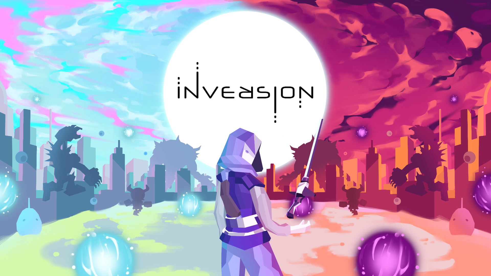
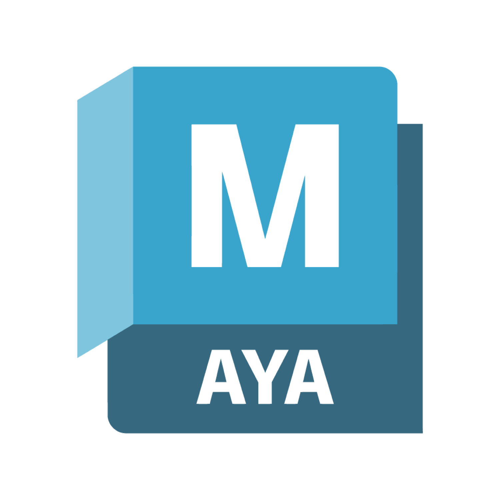
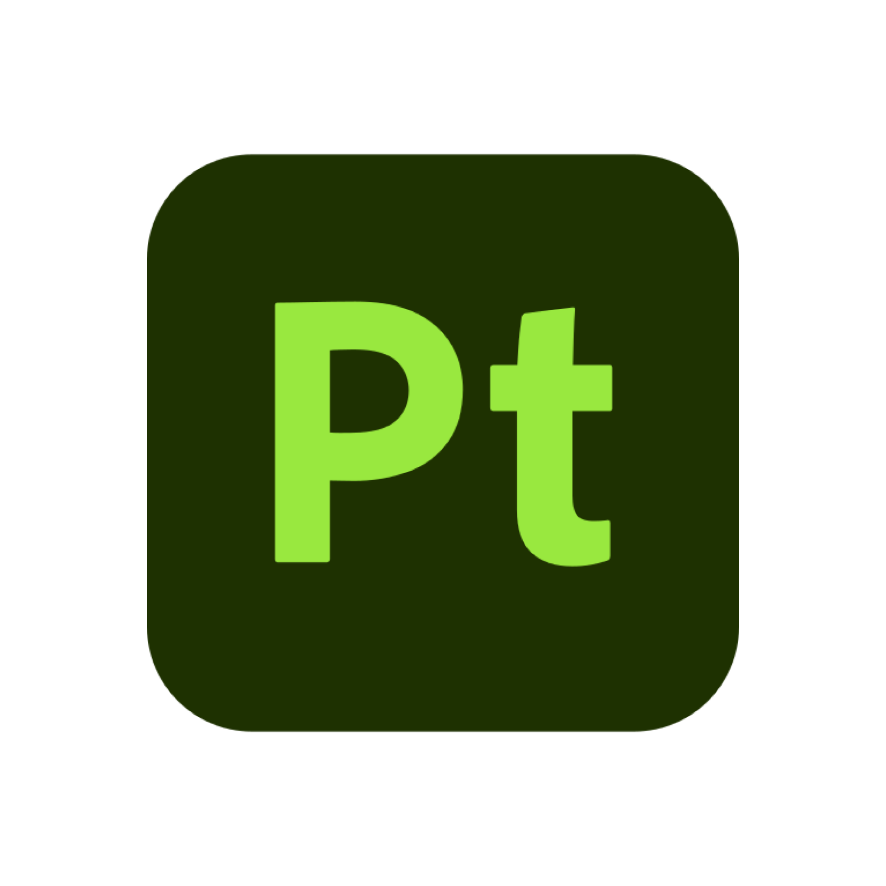
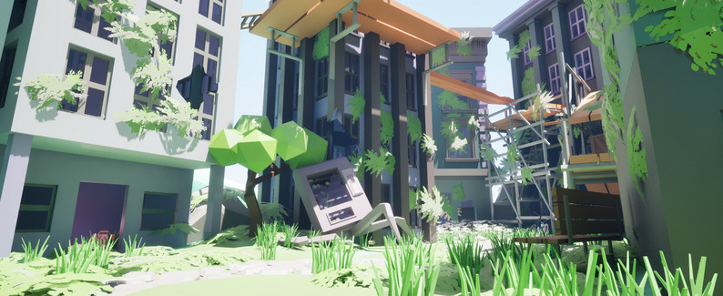
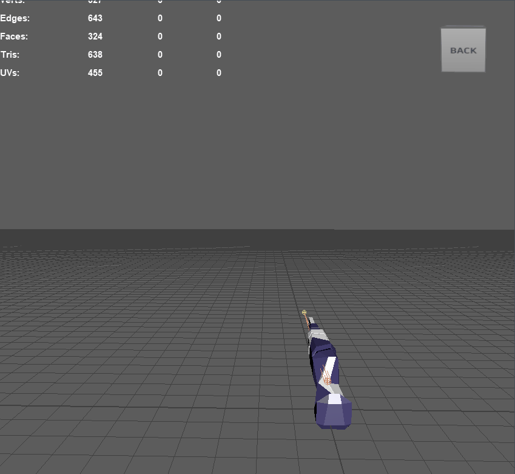
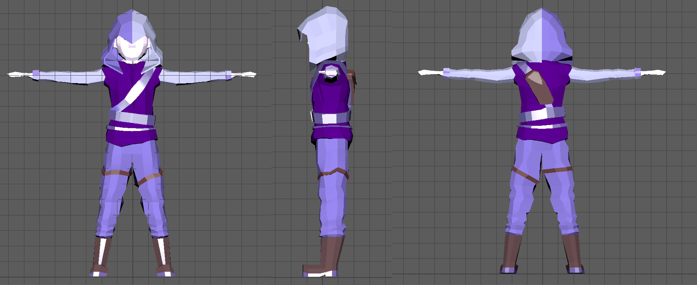
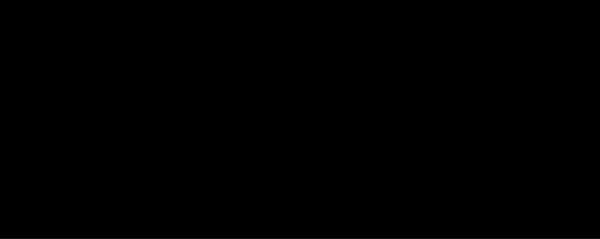
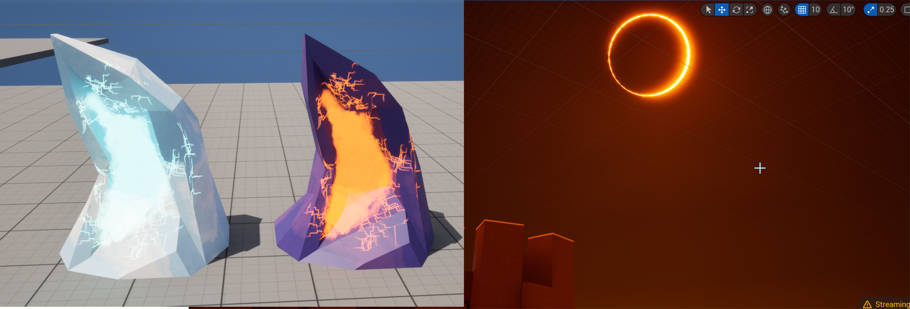

Inversion
Category: Game Development |
Date: June - July 2024 |
Platform: PC




Overview
A Soulslike game - Stuck in an eternal loop between worlds, fight your way to the top and return home.
Created in a team of 5 in 2 weeks for Snow Game Jam. (Also my first game!!!)
My roles on this project: Creative Director, Technical Artist
Game Design
The game jam we were participating in had a list of requirements: it had to be a Soulslike game, and it had to use the theme Light and Dark. With these parameters, we came up with the idea of a shooter game with switching between 2 worlds on death while trying to make it to the top of the world. The soulslike requirement meant we had to make the gameplay challenging yet rewarding, so we implemented a system that focused on using bullets strategically (and dying quickly if you fail to do so.) This make the gameplay a learning process for the player, who starts out with very limited bullets and can only gain more through successfully killing monsters. Different upgrades can be obtained from orbs collected from each world, and you can specialize in the type of world's abilities you want (with taking all of one world's abilities causing the other to get locked off). This all contributed to our goal of making gameplay strategic and challenging while making it a learning process for the player.
Art Direction


The world we wanted to create was a post-apocalyptic city, an otherworldy variant of "Terra" (home) riddled with monsters. We opted for a low poly style for our game models so that we could quickly create a bunch of assets in our short 2-week time frame. We only had 1 modeler at the beginning of the jam, and then two others joined on later into the process, but we wanted to make the workload light and doable for the time we were given.
Level Design
I was in charge of all of the level design for this game. With the levels, I aimed to create three different "stages" while remaining in the same world. I achieved this through making the levels a vertical ascendance from start to finish. This allowed us to create a smaller environment and focus more on the quality of the smaller scale environment.

I started with creating a blockout for locations of buildings, creating a flow for the player to go towards the end of the initial ground area. From there, the player travels upwards (the pink platforms) to the second area, which is more of a platforming level with new types of shooting enemies to dodge. The player retraces their steps back to the start again but on the new elevation, creating a whole new level in the middle of the air. Finally, the player makes it to the end of the middle section and climbs to the rooftops, where they face down the final boss. Throughout the levels, I considered where the player could hide for cover, what would give the player fun ground to traverse, and allowed for strategic gameplay through positioning. I had to be careful to make sure the player could not jump ahead of the level faster than I meant them to so that the levels would flow correctly.
The initial blockout gave enough information to request models to implement. The models were structured based on the initial blockout, and the end result was a city which you continually climbed through throughout the game. Our game uses two worlds: the light and the dark world. The dark world uses different textures and lighting to differentiate it and features different upgrades that can be obtained.
Gun/Sword Blend Shape with Rig and Animation

Character Model

UI Code (illustrations by Adora Vu)

Shader Effects




Project Credits
Creative Directors: Hoang Nguyen, Endlessette Osborn
Programmers: Hoang Nguyen, Endlessette Osborn
3D Modelers: Phuong Truong, Adora Vu, Nathaniel Zapata, Endlessette Osborn, Hoang Nguyen
Illustrators: Adora Vu, Endlessette Osborn, Phuong Truong